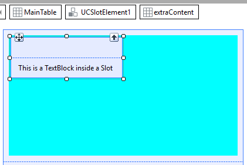
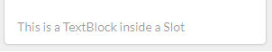

Continuing with the example shown here regarding the UI control "Card" provided by Semantic UI CSS Framework, and upon supposing the case where instead of having a fixed content in the extra content section you want to have the freedom to include whatever you wish there (slot), what should you do? The GeneXus User Control object enables the modeling of the referred scenario by using an HTML 5 standard element known as slot with which you have a placeholder for any content that you might want to add in a specific HTML structure. Additionally, the slot is reusable, so you may define structures once and then use them as many times as necessary. In order to define the slot, a slot must be added to the extra content section (which is an html div element inside the User Control) for it to be filled out by those willing to use the control. Considering the same example (control Card), the code will be as follows:
<div class="ui card" {{Click}} >
<div class="image">
<img src="{{ImageUrl}}"> </div>
<div class="content">
<a class="header">{{Title}}</a>
<div class="meta"> <span class="date">{{MetaInfo}}</span> </div>
<div class="description"> {{Description}} </div>
</div>
<div class="extra content">
<a> <i class="user icon"></i> {{ExtraContent}} </a>
<slot name="extraContent" />
</div>
</div>
As you open the Web Panel, you will see that inside the User Control you now have a table called "extraContent" over which you may drag and drop any element from the toolbox.  When you execute the change afterward, you will see that the footer changed and now shows the text defined in the added TextBlock:  |
| Backlinks |
| Toc:Design Systems |